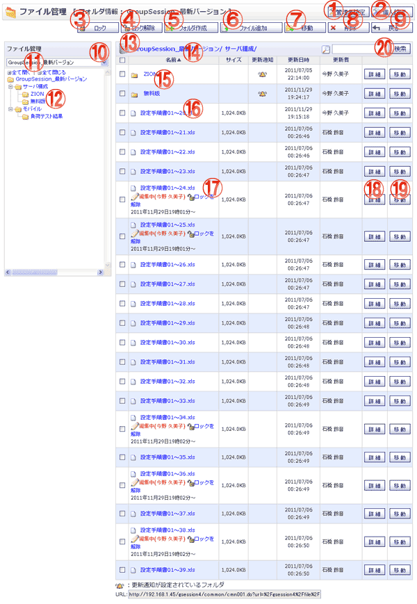

フォルダ情報を表示する画面です。

機能説明
管理者設定ボタン管理者設定画面へ遷移します。 |
個人設定ボタン個人設定画面へ遷移します。 |
|---|---|
ロックボタン選択しているファイルをロックします。 |
ロック解除ボタン選択しているファイルのロックを解除します。 |
フォルダ作成ボタンフォルダ作成画面へ遷移します。 |
ファイル追加ボタンファイル追加画面へ遷移します。 |
移動ボタンチェックボックスで選択したファイル・フォルダを移動対象にし、ファイル・フォルダ一括移動画面へ遷移します。 |
削除ボタンチェックボックスで選択したファイル・フォルダを削除対象にし、削除確認画面へ遷移します。 |
戻るボタンキャビネット一覧画面へ遷移します。 |
キャビネットコンボ選択したキャビネットのフォルダ情報画面に遷移します。 |
全て開く・全て閉じる全て開く：フォルダ階層を全て開いて表示します。 |
フォルダ階層フォルダ名：ディレクトリ情報画面へ遷移します。 |
フォルダ階層クリックしたディレクトリ情報画面へ遷移します。 |
ヘッダタイトルクリックによって一覧のソート条件の切り替えを行います。 |
フォルダ名ディレクトリ情報画面へ遷移します。 |
ファイル名ファイルをダウンロードします。 |
ロックを解除編集中のファイルのロックを解除します。 |
詳細ボタンフォルダ・ファイル詳細画面へ遷移します。 |
移動ボタンフォルダ・ファイル移動画面へ遷移します。 |
検索ボタン検索画面へ遷移します。 |
表示・入力項目説明
検索キーワード
検索するキーワードを入力します。(50文字以内)
URL
表示している画面のURLを表示します。